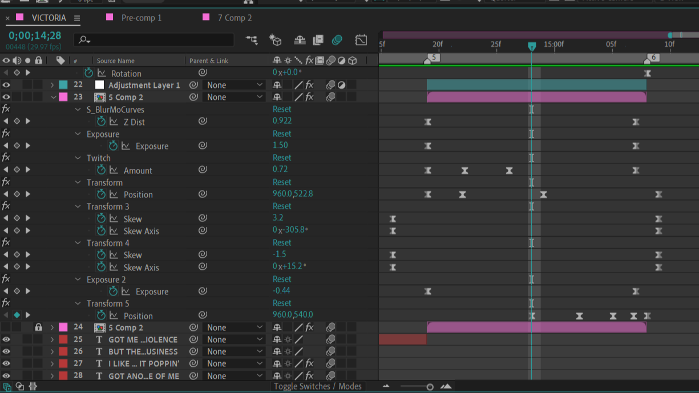
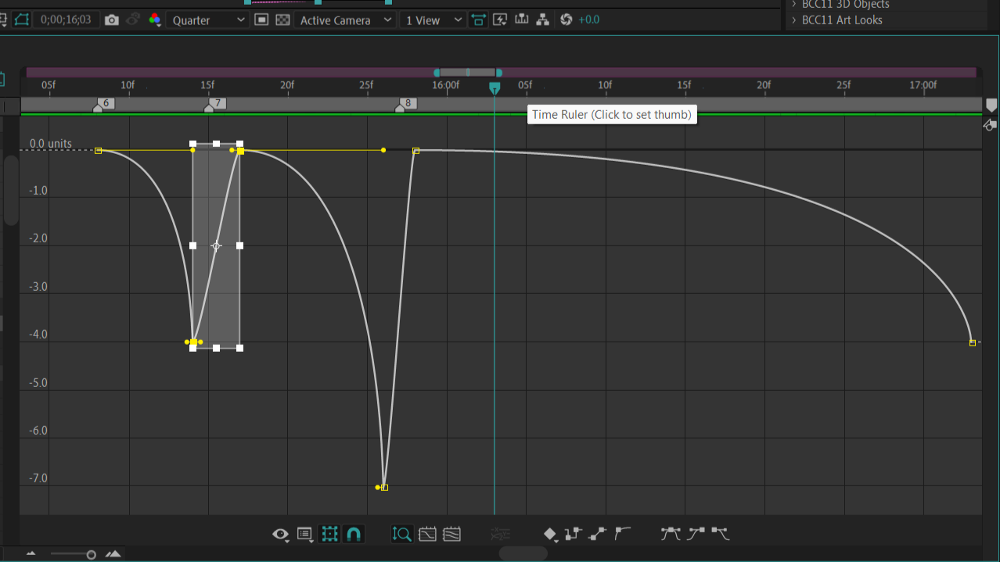
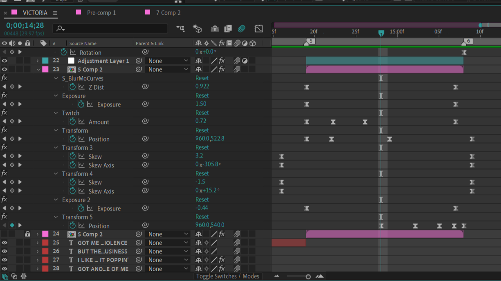
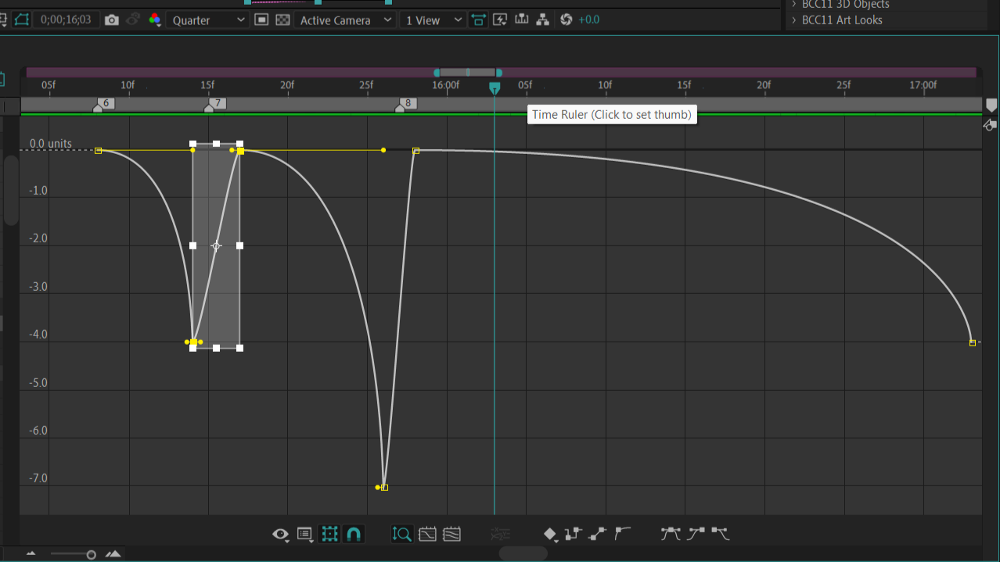

This program is where the magic happens.
From here, I import my rendered file of clips (and audio) to begin the main editing process. In this program,
I do the transitions, add effects, and typography. Not all of this can be done with the program by itself,
however. I use plugins to help make the process easier and gain access to a wider variety of tools. Some of these
plugins include:
- Twixtor
- Sapphire
- Twitch
- BCC
- MBL